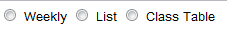
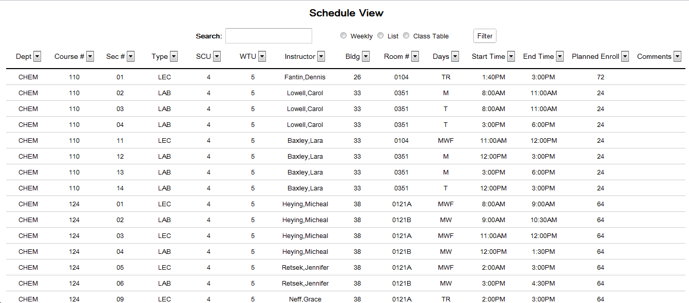
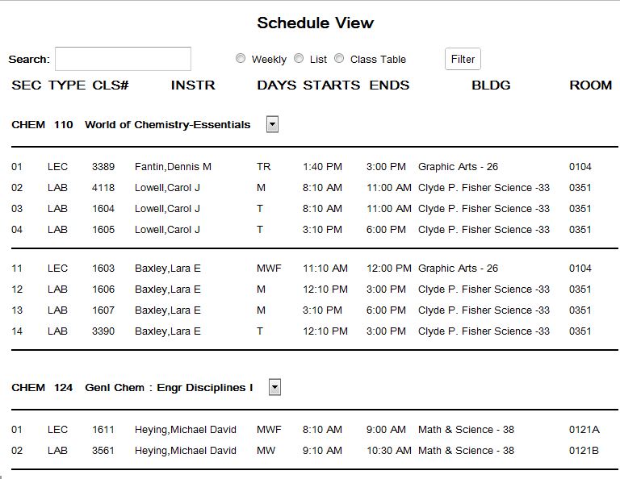

Schedule View
Schedule Views
These are the 3 main views of the generated schedule. After a Schedule has been generated, these pages show the different ways that they can be represented.
All three pages have the ability to be filtered by various metrics as well as filtered by a search box.
Viewing Options

Figure 1: Viewing Buttons
The three buttons shown above the schedule view allow the user to select three different views of the schedule. The List View shows all classes in a large and detailed table discuessed more
here. The Table View shows classes and their information in their own tables. Details on the view is here. The last view is the Weekly View which shows a variety information
in a weekly basis. This view is shown here.
Search Box

Figure 2: Search Box
The search box is a typable filter that allows for the users to type anything they wish. The current view is then filtered to only include what is entered into the search box.
This can be instructors, times, rooms, course, etc. The search is relative to the information shown by the view.
Column Filters
The  buttons allow for columns to be filtered based on the data that they contain. The list of check-boxes that appear are checked if they are to be filtered by the filter button
above the schedule information.
buttons allow for columns to be filtered based on the data that they contain. The list of check-boxes that appear are checked if they are to be filtered by the filter button
above the schedule information.
List View

Figure 3: List View of the Schedule
The List View is the most detailed view of the schedule. It contains all the information relavent to all classes offered. The Department, Course Number, Section Number, Type of course, SCU, WTU,
Instructor, Building, Room Number, Days it is taught, Starting Time, Eding Time, Planned Enrollment, and Comments are all sortable columns.
Department- displays the Department that is teaching the class for that quarter.
Course Number- the number of the course as shown in the catalog.
Section Number- the course specific number given to classes of the same course number to differentiate them.
Type- either a lecture or a lab.
SCU- needs to be researched because I have no idea what that is.
WTU- the worktime unit given to the professors for teaching the course.
Instructor- the person teaching the course.
Building- the building in which the course will be taught.
Room- the specific room in the building in which the course will be taught.
Start Time the time at which the will start.
End Time- when the class will be completed.
Planned Enroll- is the estimation of how many student will be attending that class.
Comments- allows for any additional information to be displayed relavent to thatparticular course and section.
Table View

Figure 4: Table View of the Schedule
The table view shows all the courses offered in the schedule. It shows all the information displayed by PASS. The heading displays the Course Department, the Course Number,
and the full course name. The columns under each course list the Section, whether is it a Lecture or Lab, the proposed Course Number, the Days it is offered,
it's Starting Time, Ending Time, Bulding and Room.
Section- the section of the course.
Type- whether or not the course is a Lecture or Lab.
Course Number- the proposed course number for PASS.
Days- the days the course is offered.
Starting Time- the starting time of the course.
Ending Time- the ending time of the course.
Building- the building the course if taught in.
Room- the room the course is taught in.
Weekly View

Figure 5: Weekly View of the Schedule
The Weekly View shows all courses offered in a Monday-Friday look of all the classes. The view is mainly meant for searching out Instructor, Courses, and rooms. The times and days
can be filtered out with the filter button. Each entry with overlapping classes can be selected to show a dropdown of all the courses and sections offered at that time. This is shown below.

Figure 6: Weekly Dropdown